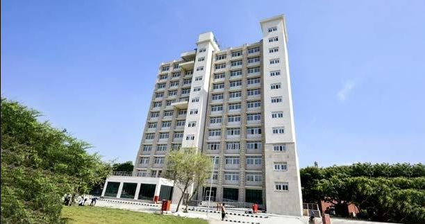

Dr. A. P. J. Abdul Kalam Hostel
One of the most distinguished scientists of India and the 11th President of India Dr. Avul Pakir Jainulabdeen Abdul Kalam was born on 15th October 1931 at Rameswaram in Tamil Nadu.
Dr. Kalam made significant contribution as Project Director to develop India's first indigenous Satellite Launch Vehicle that made India an exclusive member of Space Club. He was responsible for the evolution of ISRO's launch vehicle programme, particularly the PSLV configuration. After working for two decades in ISRO and mastering launch vehicle technologies, Dr. Kalam took up the responsibility of developing Indigenous Guided Missiles at Defence Research and Development Organisation as the Chief Executive of Integrated Guided Missile Development Programme (IGMDP). He was responsible for the development and operationalisation of AGNI and PRITHVI Missiles. He was the Scientific Adviser to Defence Minister and Secretary, Department of Defence Research & Development from July 1992 to December 1999. During this period he led to the weaponisation of strategic missile systems and the Pokhran-II nuclear tests in collaboration with Department of Atomic Energy, which made India a nuclear weapon State. He also gave thrust to self-reliance in defence systems by progressing multiple development tasks and mission projects such as Light Combat Aircraft. He has been awarded the coveted civilian awards – Padma Bhushan (1981) and Padma Vibhushan (1990) and the highest civilian award Bharat Ratna (1997). The hostel was inaugurated on 20-07-2022 with the capacity to accommodate approximately three hundred students. The hostel building consists of 11 floors for residency, and on the ground floor a gymnasium, TV room, and Sports Room are provided for recreational activities. Three lifts are provided in the hostel for easy access to the rooms. All rooms in the hostel are provided with air conditioning during night and each room is provided with furniture needed by a student – bed, table, chair and cupboard. At present, each hostel room is allotted with triple occupancy. Newspapers and magazines are kept in the TV room for the resident students. WIFI connectivity and water coolers with RO are provided on each floor of the hostel. The Hostel Committee comprising the Warden and the student representatives: President, Vice-President, Mess Secretary, Maintenance Secretary, Sports Secretary etc. coordinate for the running of day-to-day activities of the hostel.
Hostel Facilities: AC, Pool Table, Table Tennis, Fitness Equipment, Television, Music System, Internet, Geysers for hot water, Water Cooler etc.
Total Seats: 301
